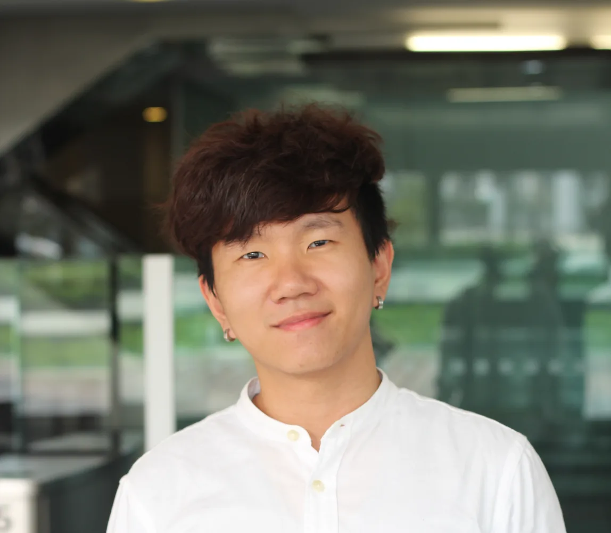

Open to AI / ML roles
Chen Jun Ming
AI/ML Engineer —
LLM systems
✻
RAG · multi-agent · data infra

chenjunming.com
✻
claude-code
>
whoami
Chen Jun Ming
AI/ML Engineer
— building LLM-powered systems
RAG · multi-agent tools · data infrastructure
<
JunMing.
/>
chenjunming.com
Chen Jun Ming
builds with LLMs.
AI/ML Engineer
RAG · agents · data infra
<
JunMing.
/>
Chen Jun Ming
AI/ML Engineer
✻
RAG pipelines
✻
Multi-agent systems
✻
Data infrastructure